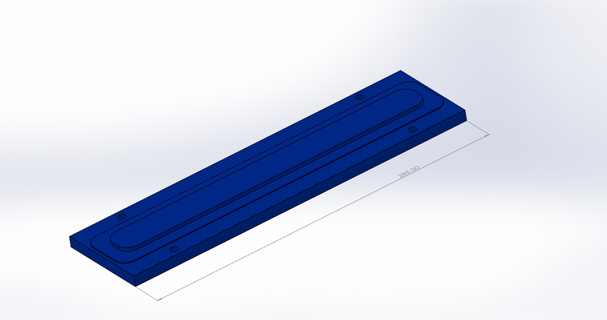
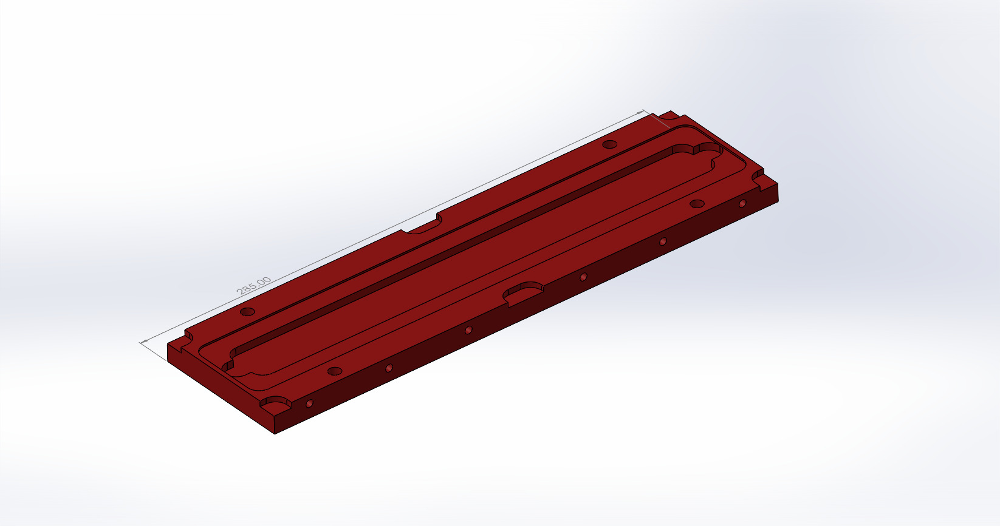

Carbonizationparagraph Figure 1 Figure 2 Figures 1 and 2 depict the mold and its male and female constituents with dimensions 295 mm x 76.2 mm x 21.4 mm when interlinked and is designed to create rectangular test specimens with dimensions 260 mm x 26 mm x 1 mm. Our experiments were constrained by the amount of BODA resin distributed to us by Hand Technologies LLC.; despite this, we attempted to adhere as close to the dimensions of ASTM D3039 (See Test Method for Tensile Properties of Polymer Matrix Composite Materials in the repository), a test specification for composite tensile testing. Post-carbonized composite test articles were cut to dimensions 260 mm x 12.7 mm x 1 mm using a water saw supplied by Patterson Laboratories. |